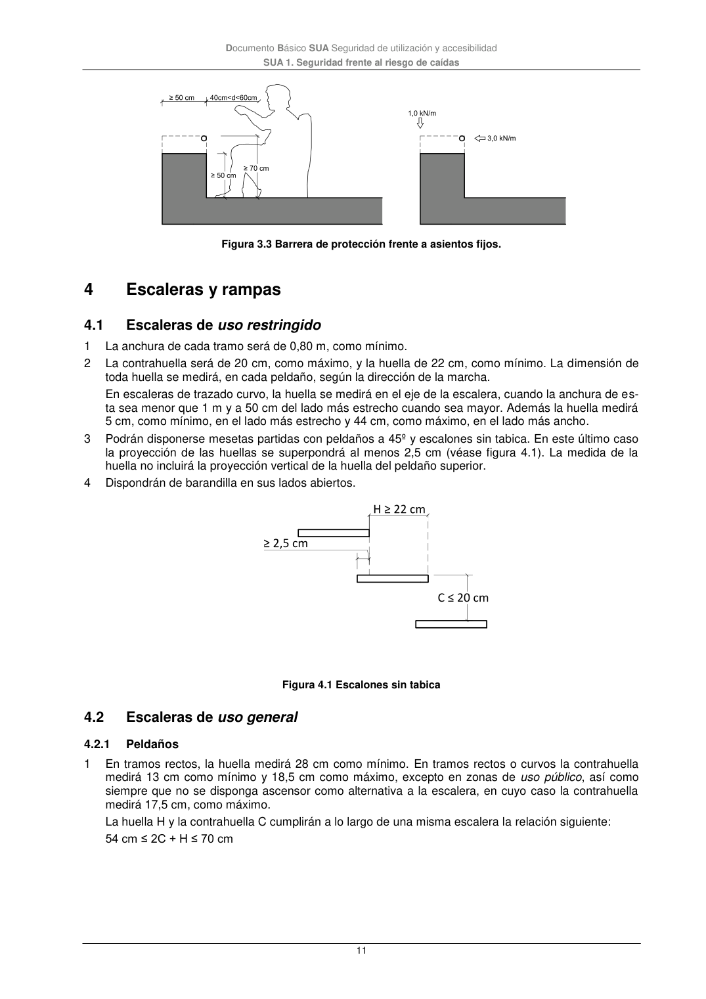

DB-SUA Seguridad de utilización y accesibilidad · edición 2022-06-14 · capa oficial
Documento DB-SUA-oficial · SHA-256 del PDF 3cfb5bbb135e8f02faebd8b844e03e8947994c18d4c9e675a7d2aa37d1cd5958
Página física 11 de 47.
Copia fiel del PDF fuente · Fuente oficial
Ficha de la disposición en la fuente oficial
Formato: Texto de la página (Markdown)
Documento Básico SUA Seguridad de utilización y accesibilidad SUA 1. Seguridad frente al riesgo de caídas 11 Figura 3.3 Barrera de protección frente a asientos fijos. 4 Escaleras y rampas 4.1 Escaleras de uso restringido 1 La anchura de cada tramo será de 0,80 m, como mínimo. 2 La contrahuella será de 20 cm, como máximo, y la huella de 22 cm, como mínimo. La dimensión de toda huella se medirá, en cada peldaño, según la dirección de la marcha. En escaleras de trazado curvo, la huella se medirá en el eje de la escalera, cuando la anchura de es- ta sea menor que 1 m y a 50 cm del lado más estrecho cuando sea mayor. Además la huella medirá 5 cm, como mínimo, en el lado más estrecho y 44 cm, como máximo, en el lado más ancho. 3 Podrán disponerse mesetas partidas con peldaños a 45º y escalones sin tabica. En este último caso la proyección de las huellas se superpondrá al menos 2,5 cm (véase figura 4.1). La medida de la huella no incluirá la proyección vertical de la huella del peldaño superior. 4 Dispondrán de barandilla en sus lados abiertos. Figura 4.1 Escalones sin tabica 4.2 Escaleras de uso general 4.2.1 Peldaños 1 En tramos rectos, la huella medirá 28 cm como mínimo. En tramos rectos o curvos la contrahuella medirá 13 cm como mínimo y 18,5 cm como máximo, excepto en zonas de uso público, así como siempre que no se disponga ascensor como alternativa a la escalera, en cuyo caso la contrahuella medirá 17,5 cm, como máximo. La huella H y la contrahuella C cumplirán a lo largo de una misma escalera la relación siguiente: 54 cm ≤ 2C + H ≤ 70 cm
